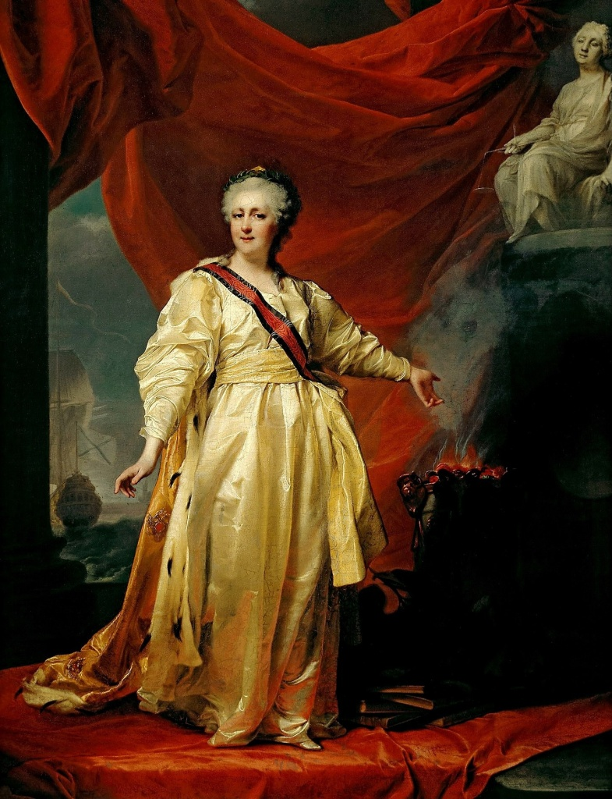

Екатерина II Великая — одна из самых известных правительниц Российской империи. Она пришла к власти в 1762 году после дворцового переворота и правила страной более тридцати лет.
Екатерина родилась в Германии, однако после приезда в Россию приняла православие и стала супругой Петра III. После свержения мужа она заняла престол и сумела значительно укрепить свою власть.
Во время правления Екатерины II Российская империя значительно расширила свои территории. В состав государства вошли Крым, северное Причерноморье и часть польских земель. Россия стала одной из крупнейших держав Европы.
Императрица проводила политику «просвещённого абсолютизма». Она стремилась развивать образование, науку и культуру, поддерживала открытие школ, библиотек и учебных заведений.
В эпоху Екатерины активно развивались города, промышленность и торговля. Однако одновременно усиливалось крепостное право, что вызывало недовольство среди крестьян. Крупнейшим народным восстанием того времени стало восстание Емельяна Пугачёва.
Екатерина II вошла в историю как сильная и влиятельная правительница. Её эпоха считается временем расцвета Российской империи, укрепления международного авторитета страны и активного развития культуры XVIII века.
